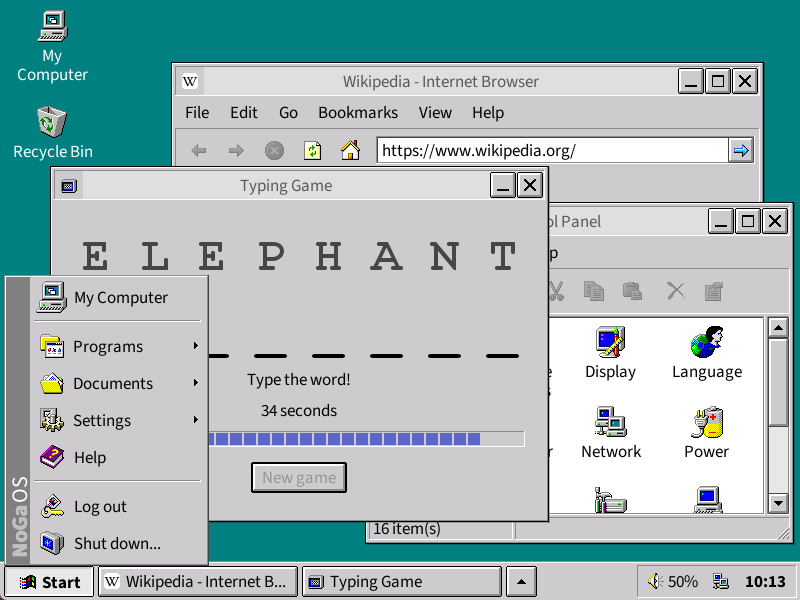

NoGaOS
Smooth a child's way into computers. Give them the same experience we had in the 90s.

Running it
Install Java 17 or newer, then run the downloaded file:
java -jar nogaos-265.jarThe first start asks you to create an account. Video and audio playback need VLC installed on the computer; nothing else does.
A computer of their own
An old laptop or a Raspberry Pi can become a NoGaOS computer: it powers on straight into NoGaOS, with no login prompt and no Linux desktop reachable behind it. Install Debian (the small "netinst" image, with no desktop environment selected) or Raspberry Pi OS Lite, log in, and run:
wget -qO install-kiosk.sh https://nogaos.org/install-kiosk.sh && sudo bash install-kiosk.shIt installs Java and everything else NoGaOS needs, downloads the latest version and sets the computer to start it on boot. It is a plain script you can read first, and running it again is safe.
Status
This is a personal project, written for my own children and shared in case it is useful to anyone else. It is early and it has rough edges. If you try it, bug reports and comments are welcome.